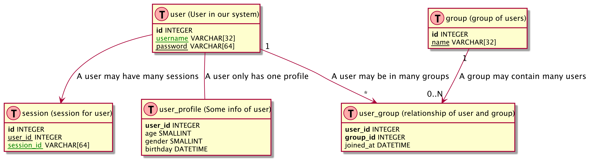

Important
** The whole document needs to be re-worked and does not reflect the current design! It is based on the initial planning and has not been updated.
It does not reflect the actual package and day=tabase!!!!
TODO: Update this document! **
Ideas
The workflow should be separated from the functionality, i.e. R package containing functionality, scripts (or other packages) which contain the workflow load the functionality package and condtrol the analysis.
the forecast should be triggered automatically after the data has been updated, thus the forecasts are perfectly in sync with the data. The Forecast repo will contain a link to the tag of the data used for the last release. it would be ideal to have the same tags for Data release and Forecast release.
Local Processing
Current processing
localProcessingCurrent
All file sizes are per sample.
Flow Cytometry
- Machine output
.c6 - R script
-
BioBasepackage reads.fcainto R, and - further processing and gating by using
flowCore - results in
.csvwith count of particles of gated dataset
-
Flow CAM
- input of reference images for identification
- automated classification of particles using reference images
- output
.csvwith count of each species
Video / BeMovie
- input of reference images for identification
- video recording (~500MB)
- Video analysis using
BemoviR package - classification of particles into species
- results in
.csvfile with size info for each individual particle identified - can be aggregated to return only mean sizes, but not ideal as aggregated
TODO
- testig quality of recording. The testing of the movie should be done in Bemovi itself (add to package possibly?)
- processing of first seconds of the video
- automatic recognition of errors / quality
- assign quality value (\(1 \dots 0\))
- depending on threshold continue processing, request re-recording, or ask for confirmation from operator
- analyse whole movie
Sequence Diagrams

Child Repos (public)

sequence_detailed_child_repo
Remarks
DOI and TrustedTimeStamp
These need to be enabled in the repo itself via webhooks. Alternatively, one could also call them from R via a curl command - advantages would be more control?
config file in repo which specifies properties
Format has to be human readable, YAML and one can use the package config https://cran.r-project.org/web/packages/config/ to load the configs easily. Also, one can specify the configuration for Master as well as Child repo in one config file which can be in all repos of the set.
Possible fields (with default valuse) could be (if one is using R instead of webhooks for DOI and TTS):
default:
doi: FALSE
tts: TRUE
data:
backend:
master:
doi: FALSE
tts: TRUE
data:
backend:
mssql:
Database: "[database name]"
UID: "[user id]"
PWD: "[pasword]"
Port: 1433
public:
doi: TRUE
tts: TRUE
data:
backend:
csv:
folder: rawData
heatwave_e_1:
doi: TRUE
tts: TRUE
data:
backend:
csv:
folder: rawData
heatwave:
doi: FALSE
tts: TRUE
data:
backend:
mysql:
Database: "[database name]"
UID: "[user id]"
PWD: "[pasword]"In addition, the repo will contain one file named CONFIG_NAME which contains the name of the config to be used, e.g. master if it is the nmaster config
Questions
- How to deal with embargoed data - date for end embargo?
- Problem: What if embargo date changes? SHould we change already older data? I don’t like this.
- Better: column for embargo id, where each id will be specified in meta data table, in which the final date for embargo is stored. So the actual data does not need to be changed later if the embargo needs to be extended, only the embargo table needs to be changed
- mor than one level of child repos necessary? I don’t think so.
Data table
| data | child repo key |
|---|---|
| … | public_MSC_Peter |
| … | public_PhD_Mary |
| … | heatwave_private |
| … | heatwave |
Do we need multiple child repos? Should be easy to implement and adds flexibility.
Child Repo Table
If there are not to may, a YAML config file could be used, otherwise a table. The YAML file would be easier to edit. ##### Table
| child repo key | child repo | from | until |
|---|---|---|---|
| public_MSC_Peter | LEEF.public | 12.05.2019 | |
| public_PhD_Mary | LEEF.public | 12.05.2022 | |
| heatwave_e_1 | LEEF.heatwave.public | 01.01.2019 | 01.01.2019 |
| heatwave_private | LEEF.heatwave | 01.01.2018 | 01.01.2020 |


Github Repos
Github repos are used to archive the data and the forecasts. They also host the R packege which containe the functionality, but here I will focus on the Data github repos.
Private
We need some private repos, as some data will be embargoed for some time due to thesis and publication priorities.
LEEF.Master
This repo is used for archiving all data. It will contain the checked and cleaned data. Functions from the Publishing R package can be used to calculate summary stats and show these on a website.
The repo is structured as an R package which contains all the data. In addition, the data is stored in a csv format in the rawData folder for access from other programs. The easiest way to get the updated data is to update the package in R.
GitHub apps
This repo, when receiving a pull request, triggers a Travis-ci build to - check the data contained in the pull request - clean the data contained in the pull request - update the data in the repo if the data is OK and cleaned successfully via a commit as new version. - Trusted Timestamp for all transactions - publishibng of public data to public repo - after updating, forecasting is triggered
Database Modelling TODO
Layout Based on https://gist.github.com/QuantumGhost/0955a45383a0b6c0bc24f9654b3cb561

databaseModell
R Packages
Background info
- Commits have to be signed and contain a trusted timestamp, e.g.
- https://proofofexistence.com/
- https://tsa.safecreative.org/
- https://www.freetsa.org/index_en.php
- this one looks promising: https://www.npmjs.com/package/gitlock
- Some background to Trusted Timestamps https://d-mueller.de/blog/dealing-with-trusted-timestamps-in-php-rfc-3161/
- bitcoin blockchain https://www.ideals.illinois.edu/bitstream/handle/2142/73770/478_ready.pdf
- https://github.com/cgwalters/git-evtag ?
Part 2 - README2
bftools from https://docs.openmicroscopy.org/bio-formats/5.8.2/users/comlinetools/conversion.html (2018/06/22)
TODO
Move pre-processors and extractors into separate packages
These will contain the functions and the code to add it to the queue for processing. This adds flexibility as additional data sources can be added easier.
Metadata storage TODO
Which metadata should be stored and in which format? Metadata is required at different levels:
- new data package
- date, experiment, who collated the data package (responsible for it), comments, …
- linked via the hash used for the TTS
- data source
- machine, type, version, person who processed the data, comments, …
- per experiment
- name, person responsible, info about experiment, comments, … How to store the description of the experiment - link to paper / outline?
- I am sure we need more!!!!!!
Define database structure including hash and id fields
- define fields and linkages between tables
- add hash and id fields to
.rdsfiles in theLastAddedfolder - Write code to write LastAdded to SQLite database
function to request DOI
This function will publish the data at the is only necessary for public repos, but the functionality needs to be included here. This needs to be done in a github repo - gitlab possible?
Download seed file
After the TTS is obtained, the seed is downloiaded and saved in the directory as well. This needs to be automated and done later, as the seed is only avvailable about 24 hours after the initial submission.
DONE
Hashing and TTS for new_data TODO
Request TTS (Trusted Time Stamp) is obtained from archive_new_data() and is stored in the samd directory as the archive
build hash / checksum of archive
This is used only to checksum the archive and for obtaining the TTS for the archive hash.
Confirm on what raw data is for archiving, DOI, …
At the moment, data is converted from proprietory to open formats and archived afterwards.
DONE — revise configuration and initialisation
Remove the CONFIG.NAME file and incorporate it in the config.yml file.
Configuration should be done by running a initialize_db() function which 1) reads config.yml from working directory 2) creates directory structure (if not already existing) 3) creates empty database (if not slready existing) 4) adds pre-processors, extractors, … This will make the usage of different databases much easier and the package much more versatile
Introduction
This repo contains an R package for
- importing new data into the data base
- accessing the data base
which contains data from the experiments.
It only contains the infrastructure, while the source specific processing is provided by source specific packages which are called from this package.
The data is stored locally in a directory structure an SQLite database, but remote storage is planned.
Functions which need to be called by the user are: * initialize_db(): to read the config file and to setup the needed directory structure * import_new_data(): to import new data * TODO `
- import of new data
- request new foreacasts
Dependencies
bioconductor packages
The extaction of the data from the flowcytometer depends on bioconductor packages. They can be ionstalled as followed (details see https://bioconductor.org/install/#install-bioconductor-packages )
It is also possible, that the following packages have to be installed by hand:
Installation of R package
Prerequisites
As the package is only on github, you need devtools to install it easily as a prerequisite
install.packages("devtools")Installation of the package
devtools::install_github("rkrug/LEEF")Usage of package
Initialization
The package needs some information to be able to handle the import, storage and retrieval of the data. This information is stored in a file called by default config.yml.
The default config.yml included in the package looks as followed:
[1] "# General info"
[2] "# --------------------------------------------------------------------"
[3] "# General info regarding the processing"
[4] ""
[5] ""
[6] "name: LEEF"
[7] "description: LEEF Data from an long term experiment."
[8] " Some more detaled info has to follow."
[9] "maintainer: Rainer M. Krug <Rainer@uzh.ch>"
[10] ""
[11] ""
[12] "# --------------------------------------------------------------------"
[13] "# Directorie for the processing"
[14] "# --------------------------------------------------------------------"
[15] "## The folder structure in this directory"
[16] "## has to be one folder for each measurement type."
[17] "##"
[18] ""
[19] ""
[20] "directories:"
[21] " general.parameter: \"00.general.parameter\""
[22] " raw: \"0.raw.data\""
[23] " pre_processed: \"1.pre-processed.data\""
[24] " extracted: \"2.extracted.data\""
[25] " archive: \"3.archived.data\""
[26] " backend: \"9.backend\""
[27] " tools: \"tools\""
[28] ""
[29] ""
[30] "# --------------------------------------------------------------------"
[31] "# Packages which contain the pre_processors, extractors, additors, ..."
[32] "# --------------------------------------------------------------------"
[33] "# These will be installed using the `InstallCommand` and registered"
[34] "# in the queue using the `RegisterCommand`."
[35] "# The RegisterCommand` can also contain additional customizations needed by the processors."
[36] ""
[37] ""
[38] "measurement_packages:"
[39] " LEEF.measurement.bemovi:"
[40] " name: LEEF.measurement.bemovi"
[41] " InstallCommand: drat::addRepo('LEEF-UZH'); install.packages('LEEF.measurement.bemovi')"
[42] " RegisterCommand: LEEF.measurement.bemovi::tools_path(tools_path = '.'); LEEF.measurement.bemovi::register()"
[43] " LEEF.measurement.flocam:"
[44] " name: LEEF.measurement.flowcam"
[45] " InstallCommand: drat::addRepo('LEEF-UZH'); install.packages(('LEEF.measurement.flowcam')"
[46] " RegisterCommand: LEEF.measurement.flowcam::register()"
[47] " LEEF.measurement.flowcytometer:"
[48] " name: LEEF.measurement.flowcytometer"
[49] " InstallCommand: drat::addRepo('LEEF-UZH'); install.packages('LEEF.measurement.flowcytometer')"
[50] " RegisterCommand: LEEF.measurement.flowcytometer::register()"
[51] " LEEF.measurement.manualcount:"
[52] " name: LEEF.measurement.manualcount"
[53] " InstallCommand: drat::addRepo('LEEF-UZH'); install.packages('LEEF.measurement.manualcount')"
[54] " RegisterCommand: LEEF.measurement.manualcount::register()"
[55] " LEEF.measurement.o2meter:"
[56] " name: LEEF.measurement.o2meter"
[57] " InstallCommand: drat::addRepo('LEEF-UZH'); install.packages('LEEF.measurement.o2meter')"
[58] " RegisterCommand: LEEF.measurement.o2meter::register()"
[59] ""
[60] ""
[61] ""
[62] "# --------------------------------------------------------------------"
[63] "# archival_packages"
[64] "# --------------------------------------------------------------------"
[65] "# These will be installed using the `InstallCommand` and registered"
[66] "# in the queue using the `RegisterCommand`."
[67] "# The RegisterCommand` can also contain additional customizations needed by the processors."
[68] "# Additional values are archival package specific."
[69] ""
[70] ""
[71] "archive_packages:"
[72] " LEEF.archive.default:"
[73] " name: LEEF.archive.default"
[74] " InstallCommand: drat::addRepo('LEEF-UZH'); install.packages('LEEF.archive.default')"
[75] " RegisterCommand: LEEF.archive.default::register(compression = \"none\")"
[76] ""
[77] "# --------------------------------------------------------------------"
[78] "# backend packages ()"
[79] "# --------------------------------------------------------------------"
[80] "# These will be installed using the `InstallCommand` and registered"
[81] "# in the queue using the `RegisterCommand`."
[82] "# The RegisterCommand` can also contain additional customizations needed by the processors."
[83] "# Additional values are arcival package specific."
[84] ""
[85] "## NOT IMPLEMENTED YET"
[86] "## SOME MORE THOUGHT NEEDED HERE!"
[87] ""
[88] ""
[89] "backend_packages:"
[90] " LEEF.backend.csv:"
[91] " name: LEEF.backend.csv"
[92] " InstallCommand: drat::addRepo('LEEF-UZH'); install.packages('LEEF.backend.csv')"
[93] " RegisterCommand: LEEF.backend.csv::register()"
[94] " # LEEF.backend.sqlite:"
[95] " # name: LEEF.backend.sqlite"
[96] " # InstallCommand: drat::addRepo('LEEF-UZH'); install.packages('LEEF.backend.sqlite')"
[97] " # RegisterCommand: LEEF.backend.sqlite::register()"
[98] " # dbpath:"
[99] " # dbname: 'LEEFData.sqlite'"
[100] ""
[101] ""
[102] "# --------------------------------------------------------------------"
[103] "# Trusted Time Stamps"
[104] "# --------------------------------------------------------------------"
[105] "## NOT IMPLEMENTED YET"
[106] "## SOME MORE THOUGHT NEEDED HERE!"
[107] ""
[108] ""
[109] "tts:"
[110] " create: TRUE"
[111] " api_key: PRIVATE"
[112] " notification:"
[113] " notification_type: 0"
[114] " target: tsg@LEEF-UZH.ch"
[115] ""
[116] ""
[117] "# --------------------------------------------------------------------"
[118] "# DOI"
[119] "# --------------------------------------------------------------------"
[120] "## NOT IMPLEMENTED YET"
[121] ""
[122] ""
[123] "doi: FALSE"
[124] ""
[125] "# --------------------------------------------------------------------"
[126] "# queues containing functions"
[127] "# --------------------------------------------------------------------"
[128] "## These should be left blank, as they WILL be owerwritten."
[129] ""
[130] ""
[131] "queues:"
[132] " pre_processors:"
[133] " extractors:"
[134] " archivers:"
[135] " additors:"
[136] "" The fastest way to start a new data storage infrastructure is to create an empty directory and to copy the config file into this directory. Afterwards, change the working directory to that directoryt and initialise the folder structure and the package:
# library("LEEF")
devtools::load_all(here::here())
nd <- "Data_directory"
dir.create( nd )
setwd( nd )
file.copy(
from = system.file("config.yml", package = "LEEF"),
to = "."
)
initialize_db()After that, the data to be imported can be placed into the ToBeImported folder and imported by calling
import_new_data()The ToBeImported folder contains subfolder, which are equal to the name of the table in the database where the results will be imported to. Details will follow later.
Infrastructure
Configuration files of the infrastructure
config.yml
In the config.yml file are all configuration options of the infrastructure. The example one looks as follow:
default:
maintainer:
name: Max Mustermann
email: Max@musterfabrik.example
description: This is my fantastic repo
with lots of data.
master:
doi: FALSE
tts: TRUE
data:
backend:
mysql:
Database: "[database name]"
UID: "[user id]"
PWD: "[pasword]"
Port: 3306
LEEF:
doi: TRUE
tts: TRUE
data:
backend:
sqlite:
folder: inst/extdata
leef.import.activity
The top levels are different repo names (here master and LEEF) and default values for all the repos (default).
It has the following keywords: - default contaiuns self-explanatory values - doi if TRUE, will request DOI after successfull commit - tts if TRUE, will request Trusted Time Stamp of repo after successfull commit - data contains info about the data storage - backend the name of the backend and connection info - others to come
This config file should be the same for all repos in a tree, but it is not necessary.
Import of new data
Before new data can be imported, this repo needs to be forked. Once forked, all user interaction takes place via this fork and pull requests to this repo. This fork needs to be cloned to a local computer.
An import of new data follows the following steps:
- Create a new branch on the local fork and check it out.
- Add all new data files to the directory
inst/new_data/. The data has to follow the following rules:- the data has to be in a common format, e.g.
.csv - the name has to reflect the name of the table the data needs to be imported to
- metadata do be added in additional file?
- more?
- the data has to be in a common format, e.g.
- commit these changes to the local fork and push to github fork
- create pull request from this repo
- an automatic check of the package will be triggered using Travis-ci, which will test the data and not the units if the
inst/newdatadirectory is not empty - From now on in the
after_success section - after a succerssfull testhat test, the data will be imported and the database updated
- delete all imported files; if a file remains, raise error
- update version in DESCRIPTION
- the main vignette will be updated with date and (hopefully) timestamp of the data
- changes will be commited to repo with
- quit
As soon as this repo receives a pull request, it initiates the import via a Travis job. This importing is handled within the package LEEF.Processing and can be seen in detail in the package documantation.
For relevance here are two actions:
-
LEEF.Processingdoes commit the imported data to this repository or to the external database.
Package structure
The Data package contains the code to
-
check_existing_...()to check the existing data -
check_new_...()to check the incoming new data -
merge_...()to merge the new data into the existing data - …
In addition, it contains the function
-
existing_data_ok()which is doing all checks on the existing data -
newData_ok()which is doing all checks on the new data -
merge_all()which is doing all the merging
and finally
-
do_all()which is doing everything in the order ofcheck_existing_data()check_new_data()-
merge_all()
existing_data_ok()
leef.processing.content
Database Structure
Layout Based on https://gist.github.com/QuantumGhost/0955a45383a0b6c0bc24f9654b3cb561
databaseModell2